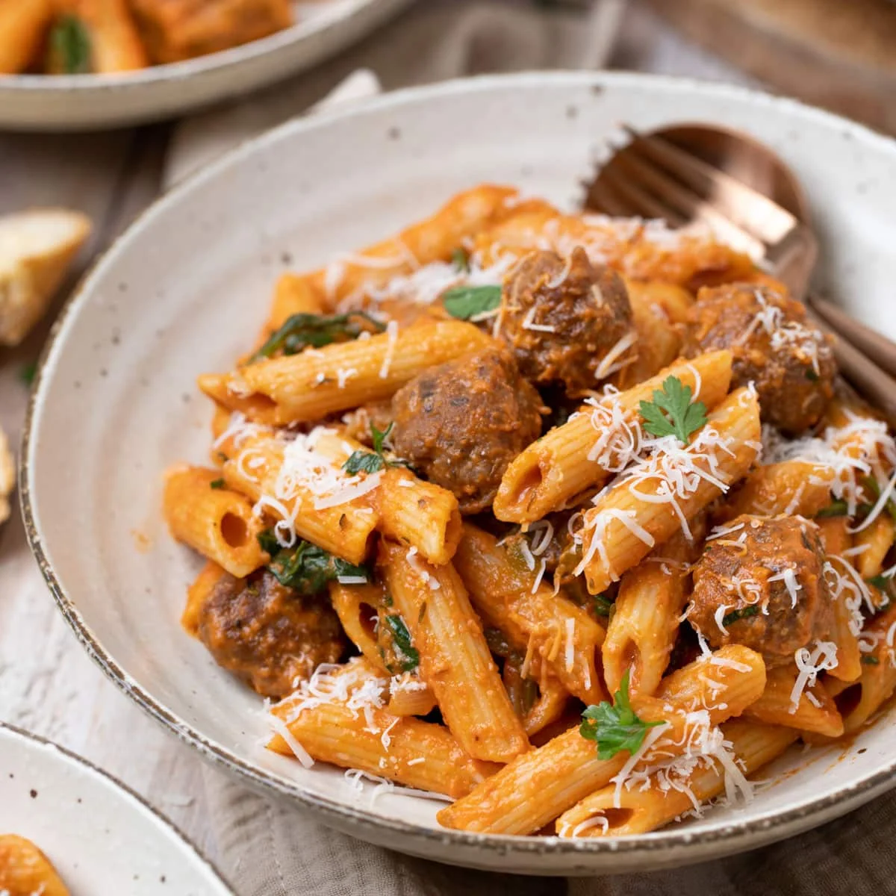

Pasta and sauteed veg

This is my favourite when it comes out right, marvellous stuff
Doesn't always work perfectly though
Ingredients
- Pasta
- Chorizo or salami
- Onions
- Garlic
- Capsicum
- Mushrooms
- Tomato paste
Steps
- Get the pasta going
- Fry the onions and chorizo together
- Add the garlic for a a few minutes
- Add the capsicum and mushrooms
- When the pasta's done, add the tomato paste and simmer a minute or two
- Add a good slosh of pasta water to the pan and boil it mostly off